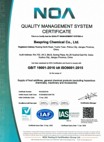
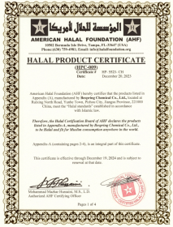
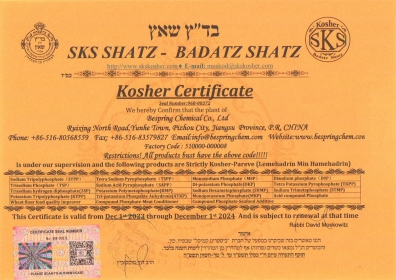

Korrekte juristische Person
Bestätigen Sie, wessen Tätigkeiten oder Tätigkeiten das Dokument abdeckt.
Qualität & Compliance
Transparente Dokumentenunterstützung für Käufer, die Qualitätssysteme, Produkteignung und Zielmarktanforderungen bewerten.
Unser Dokumentierungsansatz
Bespring stellt Qualitätssystem-, Branchenmitgliedschafts- und produktbezogene Compliance-Dokumente zur Verfügung, um die Käuferqualifikation zu unterstützen.
Ein Zertifikat ist nur dann nützlich, wenn seine juristische Person, Produkt- oder Tätigkeitsumfang, Produktions- oder Verpackungsstätte sowie die Gültigkeitsdauer mit dem bewerteten Angebot übereinstimmen. Aus diesem Grund empfehlen wir Käufern, aktuelle Dokumente für das genaue Produkt und die angebotene Quelle anzufordern.
Die Bilder auf dieser Seite zeigen Dokumente, die in Besprings Unterlagen aufbewahrt werden. Ihr aktueller oder archivierter Status wird unten einzeln angegeben.
Bestätigen Sie, wessen Tätigkeiten oder Tätigkeiten das Dokument abdeckt.
Überprüfe das genaue Material und die Produktions- oder Verpackungsquelle.
Überprüfen Sie die Informationen zu Ausgabe, Ablauf und Verlängerung vor der Genehmigung.
Vergleichen Sie Dokumente mit Ziel- und Kundenanforderungen.
Webseitenbilder werden zur vorläufigen Überprüfung bereitgestellt. Verwenden Sie sie nicht ausschließlich als Grundlage für regulatorische, religiöse oder Lieferantenzulassung. Fordern Sie eine aktuelle, lesbare Kopie an und überprüfen Sie deren Aussteller, Umfang, Standort und Gültigkeit für die genau angebotene Lieferung.
Dokumente in den Akten
Jede Karte identifiziert, was das angezeigte Dokument aussagt und ob es als aktuell oder archiviert behandelt werden soll.

Dokument anzeigenQualitätsmanagementsystem
Das ausgestellte Zertifikat umfasst Bespring Chemical Co., Ltd. und den im Dokument angegebenen Vertriebsdienstleistungsbereich.
 Dokument anzeigen
Dokument anzeigen
Mitgliedschaft in der Industrie
Das ausgestellte Zertifikat identifiziert Bespring als Mitgliedseinheit der China Food Additives & Ingredients Association.

Dokument anzeigenDokument zur religiösen Einhaltung
Dieses Bild wird als historische Referenz erhalten und darf nicht als Beweis für die aktuelle Produktabdeckung behandelt werden.

Dokument anzeigenDokument zur religiösen Einhaltung
Dieses Bild wird als historische Referenz erhalten und darf nicht als Beweis für die aktuelle Produktabdeckung behandelt werden.
Produktdokumentation
Verfügbare Dokumente hängen vom Produkt, der Qualität, der Produktionsquelle und dem Zielort ab. Fragen Sie nach den Punkten, die für Ihren Qualifikationsprozess relevant sind.
Ein Dokumentenpaket anfordernProduktidentität, Referenzparameter, Anwendungen und technische Informationen für die Erstbewertung.
Handhabung, Lagerung, Gefahren- und Arbeitsplatzkontrollinformationen gelten für das angebotene Material.
Repräsentative oder chargenspezifische Testergebnisse zum Vergleich mit der gegenseitig vereinbarten Spezifikation.
Aktuelle Qualitäts-, Lebensmittelsicherheits- oder religiöse Compliance-Dokumente, sofern verfügbar, für das angebotene Produkt und den Standort.
Beschaffungscheckliste
Eine disziplinierte Überprüfung verhindert, dass ein legitim aussehendes Dokument auf das falsche Unternehmen, Produkt, Standort oder Versand angewendet wird.
Stimmt der rechtliche Firmenname mit dem zugelassenen Lieferanten oder Produzenten überein?
Deckt die angegebene Aktivität oder der Produktumfang das Material ab, das Sie kaufen möchten?
Wird der relevante Fertigungs- oder Verpackungsort angegeben, wo erforderlich?
Sind Ausgabe-, Ablauf-, Verlängerungs- und Suspensionsdetails aktuell?
Können das Dokument und die Zertifizierungsstelle unabhängig überprüft werden?
Fragen von Einkäufern
Direkte Antworten für Qualitäts-, Regulierungs- und Beschaffungsteams, die Bespring prüfen.
Das ISO 9001:2015-Zertifikat zeigte die gültige Gültigkeit bis zum 11. November 2026. Das CFIA-Mitgliedschaftszertifikat zeigte die Gültigkeit der Bundesstaaten bis März 2029. Fordern Sie immer aktuelle signierte Exemplare vor der Genehmigung des Lieferanten an.
Nein. Der Umfang des Zertifikats kann von der juristischen Person, dem Produkt, der Produktions- oder Verpackungsstelle sowie der Gültigkeitsdauer abhängen. Überprüfen Sie die genaue verfügbare Versorgung.
Nein. Die gezeigten Halal- und Koscherbilder sind archivierte Referenzen mit Gültigkeitsdaten bis 2024. Fordern Sie vor der Qualifikation aktuelle produkt- und standortspezifische Dokumente an.
Je nach angebotenem Produkt können Käufer eine aktuelle Spezifikation, TDS, SDS, Vertreter- oder Chargen-COA sowie relevante Qualitäts-, Lebensmittelsicherheits- oder religiöse Compliance-Dokumente anfordern.
Benötigen Sie Dokumente für die Qualifikation?
Geben Sie Produkt, Qualität, Anwendung, erforderlichen Standard, Zielland und geplante Produktionsquelle an, falls bekannt.